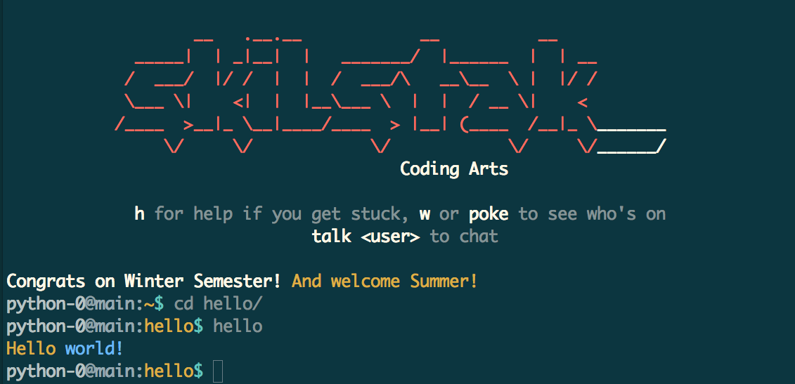
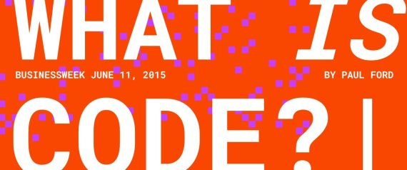
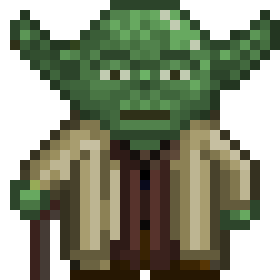
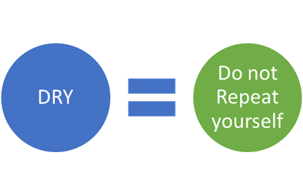
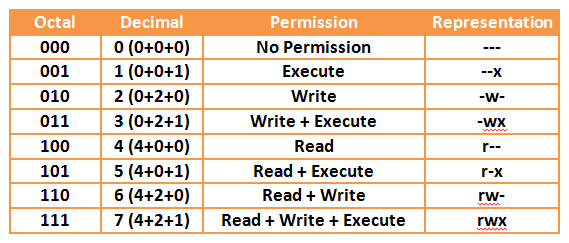
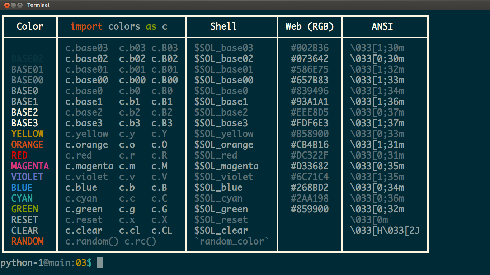

Learning to Program, in Python

Meet Python, the best first programming language anyone should learn.
It is approachable, easy, and — most of all — real. Python is
a core language used by the worldwide scientific community — including
MIT where it is the first language taught. Python can be found everywhere
from elementary schools to Hollywood — even on the cover of the
Bloomberg Businessweek dedicated to coding:

What We Learn
In this course students find out what coding is, why they should learn it,
and how. Students focus on programming fundamentals such as variables,
operators, blocks, logic, loops, data types, lists, dictionaries,
functions, exceptions, unit testing, and basic code organization.
Students gradually learn the same habits, tools, and workflows associated
with college computer science programs and technical careers. We code
using vim from the command-line the way most experienced professionals do.
Students learn modern Python (3.4+ not 2.7) for many obvious reasons.
What We Don't Learn
Python-1 focuses on basic structured and procedural programming
paradigms. It does not directly cover important but more advanced concepts
such as traditional object-oriented and functional programming. While the
games and code in Python-1 are designed to be fun, Python-1 does not
use Python IDLE, turtle, pygame or other made-for-education Python
technologies, which despite their prevalence are of dubious value in
the computer science and professional world. Focus is placed instead on
techniques and tools that will remain useful beyond this course. Students
are encouraged to unit test their code often by adding runnable snippets
to if __name__ == '__main__': but otherwise are not introduced to any
specific test frameworks.
Planning
The pace of this course is set to what an average 8-12 year-old with
typing skills can accomplish within 70 minutes of a 90 minute class. This
pace ensures instructors are not rushed in presenting the material in
fun, memorable ways and that students have plenty of time to master vim,
the Linux command-line, and GitHub as they progress. Every class ends
with at least 10 minutes of something fun and team building. At this
pace the course takes about 24 hours to complete, (which includes about
4 total hours of time for socializing, tardiness, and project time). This
is usually broken down in one of the following ways:
- 16 weeks of 90-minute classes (a semester)
- 8 weeks of 3-hour classes
- 8 days of 3-hour classes (ex: 9:30 - 12:30, M-Th)
Bonus challenges are available for faster and older learners increasing
the age range to about 18. Above that students often become annoyed at
the younger pop culture references.
The last two weeks are a review of all the previous material. Programming
is largely like learning a foreign language and these weeks are essential
to reinforce what has been learned before moving on. This is also an
opportunity for instructors to informally assess mastery and decide
if a student is prepared to move on or needs to repeat. Unlike other
subjects and programs this course should be repeated as often as needed
until full mastery is demonstrated. Mastery is essential in programming
before progressing.
Resources and Requirements


Students need access to a Linux command-line on a computer that has had
python3 installed. Usually this will be through an ssh connection
(putty, etc.) to a Linux account on a school server. This could equally
be done with individual Raspberry Pi computers, individual Linux
real or virtual machines, or a remote virtual host such as Digital Ocean.
GitHub accounts for each student are strongly recommended and the
save
command can make commits easier:
Parts and Concepts
Here are the major parts of the course with concepts introduced
in each:
- hello (about 40 minutes):
vim / chmod / shebang / #! / strings / actions / functions / print() / import / syntax / syntax highlighting / colors / solarized / operators / operands / join operator / + / quotes / " / '
- hi (about 30 minutes):
input() / variables / assignment / assignment operator / =
- nyan (about 40 minutes):
code blocks / booleans / while / inifinite loops / booleans / True / False / signals / interrupt / <cntl>-c / comments / triple quotes / """ / ''' / print(end='') / ASCII / top
- waffles (about 70 minutes):
conditions / equality operator / if / else / == / nested blocks / nesting / exceptions / try / except / exit()
- dice (about 70 minutes):
lists / loops / for / in / range() / implicit / explicit / Zen of Python / import this / list.append() / methods / . / import random / random.choice(list)
- badgers (about 70 minutes):
data types / numbers / casting / int() / str() / scope / local / global / import time / time.sleep()
- eightball (about 70 minutes):
elif / not / != / inequality operator / in / string.strip() / string.lower()
- bridge (about 140 minutes):
compound conditions / or / and / logic bugs / functions / procedures / def / return
- cli (about 70 minutes):
basic modules / refactoring / reuse / docstrings / ''' / if __name__ == '__main__': / basic unit testing
- mtable (about 70 minutes):
math operators / * / command-line arguments / import sys / sys.argv / len(list)
- madforms (about 140 minutes):
dictionaries / JSON / web APIs / string.format(**dict) / string.splitlines() / string.rstrip() / format field replacement
- bincount (about 70 minutes):
decimal / base 10 / binary / base 2 / hexidecimal / base 16 / format number conversion / format field padding / machine code
- quiz (about 140 minutes):
first-class functions / import / list.remove()
- review (about 200 minutes):
learning code is like a foreign language / needs constant practice
Total Hours: 20
Your First Program

Hello world is a famous program written by
millions in dozens if not hundreds of programming
languages.
It's a great way to start. But first …
What is Coding?
Let's assume you have never heard of coding before. If you have you
can skip or maybe you want read Paul Ford's excellent article:

Coding is when humans write instructions for computers to use. The
instructions are like recipes. The recipes are called algorithems.
Computers really only speak one language, machine language. Since
each computer machine is different computers speak different
machine languages. Remember C-3PO from Star Wars? His job was talking
between machines. (A protocol is a way to communicate.) We may not
have protocol droids like 3PO yet, but many languages have been created
with interpreters and other stuff to help humans tell different types
of computers how to do the same things.
Use the Source, Luke

These days most all code is written.
A character is a letter, number, symbol or space that you can type.
A text file is a file with letters, numbers, spaces and other characters
in it.
Source code is the text that goes into one or more text files that
make up your program. Sometimes these files can be run as a program by
themselves. These are called scripts. Sometimes source code files are
turned into other files that the computer can understand better and faster
than what you could ever type in. Making these computer-friendly files
is called compiling your code. Computers can understand some compiled
code directly and some still needs an interpreter. Just like humans,
computers sometimes need help interpreting one language into something
they understand. Like in real-life, it is faster for the computer when
an interpreter is not needed, but sometimes speed isn't as important as
being able to easily work with code that humans and many different types of
computers can understand.
A script is source code that can be run as a program.
An editor is a app used to change stuff in a file, for example, to create
a new hello program or edit a server.properties file to change
a Minecraft world to super flat.
A screen-oriented editor is an editor that doesn't need a mouse to
use. Since we are writing all our programs from a Linux terminal
(like professionals) we will use vi (or vim) a famous editor used
by great programmers since before the Internet was invented. vi
is on every UNIX/Linux computer there is. This makes it a very useful
tool to learn.
Creating Code with VIM

vi is an ancient text editor, almost the first, (which I think was
ed). Ironically it holds its position as the Stradivarius of editors
— especially now that vim has improved it. Its power comes from
its ubiquity. You can find vi on every UNIX/Linux/Solaris/AIX/BSD/Mac
system in the world by default (no it isn't on Windows, which is all you
really need to know about Windows to choose not to use it as a developer
unless forced).
Here are the survival essentials you need to master at this point. You
will learn many more as you grow into this powerful editor:
vi hello - create and open a new file called helloi - switch to INSERT mode (look in bottom left)<arrows> - move around (easiest for beginners)<esc> - escape out of INSERT<esc>u - undo, which you can repeatZZ or :q - save and exitZQ or :q! - just quit without saving:w - save without exiting
The secret for beginners is the arrows. Eventually you will use INSERT
mode less and less.
Now you are ready to start creating files with vi.
Create a Script
vi hello
print("Hello world!")
Let's start simple:
- Create a new file with
vi hello
- Type
i to change to INSERT mode in vi
- Type
print("Hello world!")
- Press
esc (in the top left of keyboard) to change out of INSERT mode
- Type
ZZ (those are capital letters) to save and close the file
- Type
python3 hello to run your code
- Mark this calendar day as your code birthday (if your first code)
This program has two parts:
- A function call:
print()
- A string parameter:
"Hello world!"
A function call is an action, a way to make the computer do something,
like print something to the screen. Many words in programming, like
function, get names from math, so pay attention in math class if you
want to be a better programmer.
A string parameter is what goes into the function call. This tells the
function what to print.
A string is a bunch of characters, letters, numbers, spaces and other
stuff strung together like beads on a bracelet or necklace and tied with
knots on the ends. The knots are quotes ("). If you leave off a knot
the beads fall off and you get a Syntax Error, which is just Python's
way of helping you get it right. Make sure you read those errors carefully
even if they contain hard words to understand, they contain a lot of clues
about the problem, which you can even Google to get more help from other
humans on the Interwebz.
Don't Repeat Yourself

The best programmers live by an important rule Don't Repeat Yourself
or DRY — even code-muggles can appreciate that. Typing python3
is far too much work. We just want to type hello, but how?
Make It Executable
Executable means runnable. It is the difference between a simple
text file and a script. To change this we use the chmod +x
hello command. After this the script is a different color and we see an x
in the permissions for the file when we do ls -l hello:
-rwxr-xr-x 1 student student 46 Jul 11 14:57 hello
Don't worry about permissions now, just know they control things
like reading and writing the file and telling the computer the file is
a script that can be run.

Tell Computer How to Run the Program
After chmoding we have to tell the computer which program we want to use to run
our Python hello script. By adding the executable permission we signaled
to the computer to look at the first line of our script for a shebang
line. This special line starts with a hashtag # and the bang
is for the exclamation point !. Coders have all kinds of slang for
different characters. Add the following on the very first line of your script:
#!/usr/bin/env python3
print("Hello world!")
Don't forget the space between env and python3 and don't forget the 3
or put a space before it.
We could have used #!/usr/bin/python3 but use the env version
instead. env is itself a program that finds other programs wherever
they are. env finds python3 wherever it may be on the system
(or another system). This makes our program easier to share with others.
Ooooo, Pretty Colors

Most classes would stop right here and call this "hello world"
complete but let's add some color and learn about import and
operators. Somehow programming is more fun with colors and these
days adding color to terminal programs is pretty easy. Most terminals
are still limited to 16 colors so we will use the Solarized Dark
Theme. What are the colors you
ask? Type colors on the command-line to see:

To use these fancy colors we have to import them. Think of this as
checking out a code book from the library that has extra stuff in it we want
to use that isn't included. The as c part tells Python we don't want to
type colors every time we use anything from the colors module:
import colors as c
Now that it's imported we can change our code to use them:
#!/usr/bin/env python3
print(c.yellow + "Hello world" + c.reset)
We put the c. in front to tell Python to use the yellow from that
module instead of another yellow we may have used in the code elsewhere.
Setting Up Your Own Colors
If you are a teacher or an ambitious student who does not
have these colors set up in your terminal you can look at
tools for
some help.
Operator!
The colors can be joined to our string with the join + operator. An
operator is a symbol that does something to the things on either side
of it called operands. You can think of an old-school telephone
operator who made connections between folks.
Or if you prefer the Matrix version, think of how Tank the operator got
a call every time Neo and the gang wanted in or out of the Matrix.
We'll join the long c.yellow for now and short for later to save on
space and typing. When in doubt, use whatever one reads the best.
The c.reset is a good habit to get into. It keeps colors from bleeding
into text that follows.
If you forget the colors you can type colors from the Linux command-line
to see them again.
Clearing the Screen
Terminals respond to special codes when they are printed to the
screen. All of the colors use these codes. One special code is
clear or c.clear or c.cl which will clear the screen when it
is printed. This is an extremely efficient way to wipe your screen clear
and starting printing something new to it. It is also very simple to use.
Join c.clear or c.cl to the beginning of your strings to try it.
Remember not to confuse c.clear with c.reset. The first clears the
screen. The second just stops the color from continuing resetting it
back to whatever the color was before.
Splitting a String
Now let's get crazy and use two colors, wahoooo! You already know how to
join a string to another with the + operator. Let's split the
two words and add a second color before the second one. Don't forget
both new strings need their own quotes.
In this case we only need a single c.reset at the end.
Color Abbreviations (Short Names)
To reduce the amount of typing and confusion when using colors short
forms of the color names are also available. Abbreviations are
when a longer word is made shorter by not writing it all out.
Keep in mind the abbreviation for c.reset is c.x since c.r is
already used for c.red and the x means "turn off".
Random Color
One last fun option is using random colors with c.random_color()
or the short form c.rc(). Don't forget the parenthesis ()
on the end, which mean that this is a function and not just a
variable. The rest of the colors are just codes in strings
inside variables. Random colors have to be selected using the code in the
c.random_color() function.
(end of hello)Hi!

This program is a more personalized version of hello that prompts
the user for a name before saying hello. The goal of the project
is to learn how to prompt users for information that they type in,
which is a core part of any interactive command-line script including
the eightball program we'll make later. It is also obviously a
core part of any sort of interactive story or text adventure game
such as the storyeng games
we will make in Python-2 and
Python-3.
"What's your name?"
#!/usr/bin/env python3
print("Hi, what's your name?")
First let's just do the same thing we did to begin hello by just
printing something out. In fact, you can just cp hello hi if you want
to save yourself the chmod u+x hi command since the proper permissions
have already been set on hello.
Notice that we use " instead of ' because the what's already used
a ' and it would mess it up. Python let's you use either ' or "
for strings and they don't have different functions (as they do in some
other programming languages).
Prompting for Input
#!/usr/bin/env python3
print("Hi, what's your name?")
input('--> ')
Now let's get some input from the user. The input() function makes
our program wait for the user to type something in and press the
enter key. Whatever we pass to the function inside of the parentheses
(or parens) () will be printed to the screen to let the user know
to type something in. This is called a prompt. There's also a fancy
name for the stuff we pass into the parenthesis like coins in a soda
machine. Parameters is what computer scientists call them (the rest
of us say params).
Remembering Input
#!/usr/bin/env python3
print("Hi, what's your name?")
name = input('--> ')
print(name)
Now we add a name variable that will have whatever the user typed
inside of it so we can use it later. The input() function is like
a machine that spits something out. When a function does this we call
it returning a value. We store that returned value into name by
assigning it just like we did color codes in hello.
To make sure all this plumbing is working we are going to just print
the name variable. print() is universally used to test code so
we can see what is going on — especially when things get more
complicated. Often this is referred to as a debug print statement. There
are much fancier ways to debug, (which means to track down problems),
in code. But the old reliable print() statement is always there to
help us out. We'll delete it later once we know our code is working.
Using all our fancy new words for things we can describe name =
input('-->') as a line of code that calls the function input() and
passes a single string as a param for the prompt and returns
another string containing what the user typed into the name
variable. By now that sentence should make sense enough to not sound
like some coder-geek foreign language. Yes, face the reality, YOU are
becoming a geek. Just own it and start imagining how you will soon use
your new superpower for good. Oh, and don't forget to go outside once
in a while.
"Nice to meet you."
#!/usr/bin/env python3
print("Hi, what's your name?")
name = input('--> ')
print('Nice to meet you, ' + name + '!')
Now let's do something more useful with the name variable. Don't forget
the space after the word you inside of the string because that will
keep the name from being too close.
A Colorful Salutation
#!/usr/bin/env python3
import colors as c
print(c.clear)
print(c.yellow + "Hi, what's your name?")
name = input(c.orange + '--> ')
print(c.yellow + 'Well ' + name + ', nice to meet you.')
Time to color things up now that the base program is working. We'll add
a new special 'color' that isn't really a color at all. It clears the
screen when you print it like the other colors.
Notice that the last line is all yellow. Can you think of a way to make
The Prompt Challenge
#!/usr/bin/env python3
import colors as c
print(c.clear + c.yellow + "Hi, what's your name?")
name = input(c.orange + '--> ')
print(c.yellow + 'Well ' + name + ', nice to meet you.')
Now, can you figure out how to make the --> prompt a different color than
what the user types in? Give it a try before you proceed.
(end of hi)Make It Stop!

Approximate Time: 45 minutes
Did you know nyan is the sound a Japanese cat makes? Sure you did. Well
before you create your new program file with vi nyan or vi meow
watch the 10 hour video for inspiration,
or not. Oh, and don't forget to chmod u+x nyan after you create it.
Truth is this project is just an excuse to learn how to create
loops that never end or infinite loops and how to stop them with
<control>-c. We'll also see what they can do to a machine with the
top command.
nyan1
#!/usr/bin/env python3
print('Nyan')
First we just print nyan. Make sure you don't forget the standard
shebang, which you should have memorized pretty much by this point. chmod
u+x nyan the file if you need to. Run it to make sure all is in order. It
is always a good idea to start with something crazy simple to make sure
you didn't miss something obvious.
nyan2
#!/usr/bin/env python3
while True:
print('Nyan')
Now for the loop part. If you have played any
CodeCombat you will probably remember the
loop: thingy. Well forget it. There is no such thing in actual
Python code. The creators told me they decided to add it because it
was too much to introduce a real loop like the one we'll add below. I
think you'll agree it isn't that hard to understand.
There are three specific changes here to make the loop work:
- The line
while True was added (note the capital T in `true)
- The colon (
:) as added after while True:
- The original
print('Nyan') line was indented with tab (4 spaces)
The word True is capitalized because is special. It is called a
boolean, which is a fancy word for values that are True or False.
We also added the loop keyword while which must always be followed with
a condition. A condition is like a question with a true or false answer.
Computers only understand true or false, on or off, 1 or 0 when you
get right down to it. But this is an easy question for the computer to
answer. How often is True true? If you answered forrrreeeeevvvvvaaa
you get bonus points. So the next question is how long does while True:
loop? Yep, same answer. But what loops forever? That's the third change.
We added a colon : to the end of the while True line to show the
beginning of a block of code to come. Blocks are lines of code that go
together inside of other code, in this case, a loop. The lines of code
in the block don't run unless the condition of the loop is true, which is
forever in this case. The other part of a block is the four spaces before
print('Nyan'). This is the other part of a block in Python. Python
sees the : and then looks for all the lines that are indented that
follow it.
Indenting is when you put spaces or tabs in front of the line. In our
case we will use the tab key because VIM turns tabs into 4-spaces. You
usually never want actual tab characters in your code.
Now is a good time to talk about one of Python's most controversial
aspects, (which means something that coders argue about a lot). Python
is a whitespace significant langauge. This means that unlike most every
other language around when Python came out, the creators of Python decided
to make Python see spaces and tabs as part of the syntax. Syntax is
the stuff of the langauge, the details, the colons, the way you write it.
This meant that if you forgot a space or put in too many spaces your code
would not work. This infuriated most traditional programmers (including
this author) and most swore an oath never to program in Python (usually
preferring Perl, C, and PHP instead). More than a decade later the use of
forced whitespace has proven a big win responsible for millions of lines
of readable code while the whitespace freedom Perl and other languages
allowed created millions of lines of 'spaghetti' and 'code that looked
like a cat walked across your keyboard'. Python's strict, there is one
best way to do it' (including the style of the code itself), won v.s. the
artistic 'there is more than one way to do it' approaches of Perl and
others. Whatever the reason in the end, Python has clearly dominated
anywhere a lot of code is going to be written, read and maintained by
a lot of different people. This also made Python hands-down the easiest
language to learn because all the missed {s and ;s were gone. The moral
of the story? Python won, just don't forget to line up your lines.
Stopping the Loop
Ok, so you have started your nyan program and it isn't stopping!
Keep calm and <control>-c (that's both keys at the same time). This
stops the program by sending it an interrupt signal, (which we'll
learn more about later). The <control> key is in the bottom left of
the keyboard. Practice typing the <control> key with your left pinky
and the c key your left pointer finger. You'll be doing this a lot.
Loops Hurt Computer Brains
Here's something fun. Start up another terminal and login so you have
two terminals at once. In one of the terminals run the command top
and watch how the numbers change. Type z while running top to see it
all in pretty color. In the other terminal start your nyan program. See
anything change in your top terminal? ;) Remember to stop nyan just
type <control>-c and type q to stop the top terminal. If you panic
you can just close your terminal and everything should get stopped as
well. But learn how to cancel these things because every programmer ends
up having to interrupt stuff they are working on.
For a really demented friendly competition put on some theme 'ZZ Top'
music and see which of you in the class can make their loop faster than
the other and be #1 on the top list. (Did I really just encourage you to
slam the server CPU? Sigh, I'm a horrible teacher. But hey, any excuse
to play some 'ZZ Top'.)
nyan3
#!/usr/bin/env python3
while True:
print('Nyan', end=' ')
Oh, and there is this cool thing in Python 3 where if you add , end='
' you can make the Nyans print on the same line. This is because
every time you use print('Nyan') it actually adds something called
a new line character that you can't see. (In fact you can actually
print extra new lines in your strings by adding \n.) When you add ,
end=' ' you make Python change the character is uses by default to end the
line. Now it prints a space or whatever you set end to at the end.
nyan4
#!/usr/bin/env python3
import colors as c
while True:
print(c.blue + 'Nyan', end=' ')
Annnnd now the colors of course. They are so aesthetically pleasing
(fancy words for pretty) with no logical value whatsoever. It just looks
cool.
nyan5
#!/usr/bin/env python3
import colors as c
while True:
print(c.random_color() + 'Nyan', end=' ')
'Cuz random_color(). That is all.
More ...
Can you get yours to pick a random color for every letter of the word
Nyan? Just fun stuff.
(end of nyan)Do You Like Waffles?
mmmm
(end of waffles)Roll the Dice
booyeah
(end of dice)Badgers, Badgers, Badgers
mushroom mushroom
(end of badgers)Magic Eight Ball

Approximate Time: 90 minutes
The magic eight ball is a popular, sooth-saying toy predicting the
futures of kids, their pets, parents, and teachers for decades. The fun
part about the coded version we are going to make is that you can change
it up and even save off the conversations you have with it when asking
it lots of questions.
--> Should we make a magic eight ball?
It is decidedly so.
eightball01
#!/usr/bin/env python3
import colors as c
print(c.red + '''
Welcome to the magic eight ball!
Enter your question below.
''' + c.reset)
Let's just get something to print for now to make sure all the basics are
working. Don't forget to cp an existing program or touch eightball;
chmod u+x eightball to create a new eightball file for your that
can be run. You should already know all about colors
at this point so we'll go ahead and use them.
Here's something new, the triple-quote long string. A long string is,
um, a long string. You can use single quotes ' or double " and
everything inside is included in the string. This includes all the line
returns and words with single and double quotes with them. That's right.
Everything you put in a triple quote just gets included like you want. We
use long-strings a lot for large amounts of text and ASCII art. In fact, you
can use a triple quote later when adding more answers if you want to
get really creative and include ASCII art answers to your list.
eightball02
#!/usr/bin/env python3
import colors as c
print(c.red + '''
Welcome to the magic eight ball!
Enter your question below.
''' + c.reset)
answers = ['Yes.','No.','Maybe']
print(answers)
Now let's add some answers in a list. A list is a Python thing
that is exactly what it sounds like, just a list of items. The
items in the list can be anything you can put into a variable,
strings, numbers, other variables, even functions, (which we do in
Python-1).
You tell Python you want to use a list with square brackets []. Inside
the bracket you put the items of your list separated with commas ,. You
can have a list on on one line or on more than one line. It really
depends on your items and how many you have. For now since we only have
a few answers, and they all fit on one screen, we'll use one line.
Add the print(answers) just to make sure everything is working. You'll
delete it later. This is called a debug print and is common for seeing
what your program is doing while you develop it.
eightball03
#!/usr/bin/env python3
import colors as c
print(c.red + '''
Welcome to the magic eight ball!
Enter your question below.
''' + c.reset)
answers = [
c.green + 'Yes.' + c.reset,
c.red + 'No.' + c.reset,
c.base01 + 'Maybe.' + c.reset
]
print(answers)
On second thought how about a little color for each answer. Once we add the
color and the reset code we really need to put each item on it's own line.
eightball04
#!/usr/bin/env python3
import colors as c
print(c.red + '''
Welcome to the magic eight ball!
Enter your question below.
''' + c.reset)
answers = [
c.green + 'Yes.' + c.reset,
c.red + 'No.' + c.reset,
c.base01 + 'Maybe.' + c.reset
]
question = input('> ' + c.yellow)
Remember the hi program? Remember how we make it wait for a
user to type some input in? Let's do the same thing to prompt the user
for a question they want answered. We'll save what they type into a
question variable so we can check it later.
eightball05
#!/usr/bin/env python3
import colors as c
print(c.red + '''
Welcome to the magic eight ball!
Enter your question below.
''' + c.reset)
answers = [
c.green + 'Yes.' + c.reset,
c.red + 'No.' + c.reset,
c.base01 + 'Maybe.' + c.reset
]
question = input('> ' + c.yellow)
import random
answer = random.choice(answers)
print(answer)
Now comes the magic, the
random
magic. There are lots of spells in the
random
book of code magic. (Ok, fine, it's called a module,
but spellbook sounds so much awesome-er.) We'll just use
one cantrip for now:
random.choice(list). This function is like a hat that you put all the
items from your list into and randomly pull one out and return it. We'll
save the randomly selected answer into a variable named answer. Note
the difference between the variables answer and answers. One is singular (just one), and the other plural
(more than one).
At this point you have a working, one-time-use magic eight ball. Run it
and see.
eightball06
#!/usr/bin/env python3
import random
import colors as c
print(c.clear)
print(c.red + '''
Welcome to the magic eight ball!
Enter your question below.
''' + c.reset)
answers = [
'It is certain.',
'It is decidedly so.',
'Without a doubt.',
'Yes definitely.',
'You may rely on it.',
'As I see it, yes.',
'Most likely.',
'Outlook good.',
'Yes.',
'Signs point to yes.',
'Reply hazy try again.',
'Ask again later.',
'Better not tell you now.',
'Cannot predict now.',
'Concentrate and ask again.',
"Don't count on it.",
'My reply is no.',
'My sources say no.',
'Outlook not so good.',
'Very doubtful.'
]
while True:
question = input('--> ' + c.yellow)
answer = random.choice(answers)
print(c.random_color() + answer + c.reset)
The rest is just polish.
Let's move import random to the top now where it belongs.
Plus we want to have conversations with our magic eight ball when we are
really lonely. ;) Can you think of how you would make this program
repeat answering questions forrreevvaaa? You've done it before. Yep,
you got it, add an infinite loop with while True:. Don't forget to
tab/indent your lines over so they are included in the loop block and
don't put your answers list inside the loop. You don't need to waste the
computer's time redefining the list every time because it isn't changing.
What else, humm? Ok, let's have at least 20 answers like the actual magic
eight ball. You can make your own 20 answers unique. And no one says you
have to stop with just 20. Go crazy. PG would be awesome, but we don't
judge here. Just please consider your audience.
Annnnnd, because we are lazy, let's take out all the color codes from
the answers list and use a c.random_color() instead.
If you got stuck in the eightball program and can't get out it is because
you forgot about <control>-c that you learned in nyan.
eightball07
#!/usr/bin/env python3
import random
import colors as c
print(c.clear)
print(c.red + '''
Welcome to the magic eight ball!
Enter your question below.
''' + c.reset)
answers = [
'It is certain.',
'It is decidedly so.',
'Without a doubt.',
'Yes definitely.',
'You may rely on it.',
'As I see it, yes.',
'Most likely.',
'Outlook good.',
'Yes.',
'Signs point to yes.',
'Reply hazy try again.',
'Ask again later.',
'Better not tell you now.',
'Cannot predict now.',
'Concentrate and ask again.',
"Don't count on it.",
'My reply is no.',
'My sources say no.',
'Outlook not so good.',
'Very doubtful.'
]
while True:
question = input('--> ' + c.yellow)
if question == 'bye':
print('Goodbye')
exit()
answer = random.choice(answers)
print(c.random_color() + answer + c.reset)
But who really wants to have to <control>-c to interrupt the
conversation with the magic eight ball, which you have to admit is
rather rude. Let's add a proper goodbye.
You will likely remember the if statement from
CodeCombat. If not here it is. Like while
the if statement tests if a question (called a condition) is True
or False. There are a whole bunch of different questions and types of
questions you can ask that we will get into more later. For now we only
have one question ask: did the user type ‘bye’ or ‘goodbye’? To put the
question in a from Python understands we have to use two equals signs==together (because a single equals sign is used for assigning variables). So
the question we want to ask isif question == 'bye'and we add a block after
it to tell Python what to do if the answer to that question isTrue. We
add another new functionexit()` to the block so that the program stops
politely if the user enters ‘bye’ as their question (instead of an actual
question).
eightball08
#!/usr/bin/env python3
import random
import colors as c
print(c.clear)
print(c.red + '''
Welcome to the magic eight ball!
Enter your question below.
''' + c.reset)
answers = [
'It is certain.',
'It is decidedly so.',
'Without a doubt.',
'Yes definitely.',
'You may rely on it.',
'As I see it, yes.',
'Most likely.',
'Outlook good.',
'Yes.',
'Signs point to yes.',
'Reply hazy try again.',
'Ask again later.',
'Better not tell you now.',
'Cannot predict now.',
'Concentrate and ask again.',
"Don't count on it.",
'My reply is no.',
'My sources say no.',
'Outlook not so good.',
'Very doubtful.'
]
while True:
question = input('--> ' + c.yellow)
if question == 'bye':
print('Goodbye')
exit()
elif question == 'goodbye':
print('Goodbye')
exit()
answer = random.choice(answers)
print(c.random_color() + answer + c.reset)
We only handled if the user types ‘bye’ before but what if the user
enters ‘goodbye’ instead? The if statement actually has three parts:
if, elif, and else. We can handle ‘goodbye’ with an elif
question == 'goodbye' block. Like before we need to include the code we
want, which happens to be identical to the code from the if question ==
'bye' block.
Yes, the answer to your question is there is a better way, a lazier way.
eightball09
#!/usr/bin/env python3
import random
import colors as c
print(c.clear)
print(c.red + '''
Welcome to the magic eight ball!
Enter your question below.
''' + c.reset)
answers = [
'It is certain.',
'It is decidedly so.',
'Without a doubt.',
'Yes definitely.',
'You may rely on it.',
'As I see it, yes.',
'Most likely.',
'Outlook good.',
'Yes.',
'Signs point to yes.',
'Reply hazy try again.',
'Ask again later.',
'Better not tell you now.',
'Cannot predict now.',
'Concentrate and ask again.',
"Don't count on it.",
'My reply is no.',
'My sources say no.',
'Outlook not so good.',
'Very doubtful.'
]
while True:
question = input('--> ' + c.yellow)
if question == 'bye' or question == 'goodbye':
print('Goodbye')
exit()
answer = random.choice(answers)
print(c.random_color() + answer + c.reset)
Here's a new thing: the keywords or and and also. Just like in
English these allow us to combine two questions into one in our if
or elif condition checks. Combining two questions into one creates
what's called a compound condition check, which is coder-speak for,
well, more than one question at a time. All we really need to remember is
that unlike English we have to include the full question (condition)
for each question instead of chopping off the subject of the question
like we often do when speaking. For example, in English we say, “if
question is ‘bye’ or ‘goodbye’” when we mean, “if question
is ‘bye’ or question is ‘goodbye’”. Full questions are
important. Leaving off the extra question == in the second question
will not give you an error, but also not do what you think.
if question == 'bye' or 'goodbye': # <--- WRONG
print('always prints because never false')
The reason for this is a little complicated and will be more
understandable later. For now just know that the word 'goodbye' by
itself is seen by Python as True. It turns out an empty string is
False. This is very useful later on.
eightball10
#!/usr/bin/env python3
import random
import colors as c
print(c.clear)
print(c.red + '''
Welcome to the magic eight ball!
Enter your question below.
''' + c.reset)
answers = [
'It is certain.',
'It is decidedly so.',
'Without a doubt.',
'Yes definitely.',
'You may rely on it.',
'As I see it, yes.',
'Most likely.',
'Outlook good.',
'Yes.',
'Signs point to yes.',
'Reply hazy try again.',
'Ask again later.',
'Better not tell you now.',
'Cannot predict now.',
'Concentrate and ask again.',
"Don't count on it.",
'My reply is no.',
'My sources say no.',
'Outlook not so good.',
'Very doubtful.'
]
while True:
question = input('--> ' + c.yellow)
if question == 'bye' or question == 'goodbye':
print('Goodbye')
exit()
elif 'love' in question:
print('Do I look like Cupid to you?')
continue
elif 'die' in question or 'death' in question or 'dead' in question:
print("Such grim questions don't deserve an answer, yet.")
continue
answer = random.choice(answers)
print(c.random_color() + answer + c.reset)
We may have removed the elif for ‘bye’ and ‘goodbye’ but
what if we add it back to add an Easter Egg of sorts, you know, those
things coders put in games that are kind of secrets. What if we don't
want users asking about love or death? We'll add two more elifs. The
keyword continue makes the while continue without finishing all the
rest of the code in the loop block.
eightball11
#!/usr/bin/env python3
import random
import colors as c
print(c.clear)
print(c.red + '''
Welcome to the magic eight ball!
Enter your question below.
''' + c.reset)
answers = [
'It is certain.',
'It is decidedly so.',
'Without a doubt.',
'Yes definitely.',
'You may rely on it.',
'As I see it, yes.',
'Most likely.',
'Outlook good.',
'Yes.',
'Signs point to yes.',
'Reply hazy try again.',
'Ask again later.',
'Better not tell you now.',
'Cannot predict now.',
'Concentrate and ask again.',
"Don't count on it.",
'My reply is no.',
'My sources say no.',
'Outlook not so good.',
'Very doubtful.'
]
while True:
question = input('--> ' + c.yellow)
if question == 'bye' or question == 'goodbye':
print('Goodbye')
exit()
elif 'love' in question:
print('Do I look like Cupid to you?')
elif 'die' in question or 'death' in question or 'dead' in question:
print("Such grim questions don't deserve an answer, yet.")
else:
answer = random.choice(answers)
print(c.random_color() + answer + c.reset)
Perhaps a better way to save us from the continues is to simply add
the third part of the if/elif/else trio. We add else: (don't forget
the colon) and put the code we want to run inside the else: block by
indenting it over. Now that code will only run if and only if the if
question isn't true and neither of the elifs are either.
You may be wondering why not make a bunch of if statements instead of
using the elif statement at all. The short answer is that it is more
correct and faster. If we only used if statements every one would be
checked even if the first one was true. Using elif ensures that as
soon as one of the conditions is true that the rest of the elifs aren't
even checked and the code skipped. The first True wins so to speak. If
none of the if and elifs are True then else wins.
More ...
That's about it. Have fun with this one by adding different responses and
see if you can even add a multi-line ASCII Art answer.
(end of eightball)Command Line Utility Module
DRY
(end of cli)Multiplication Tables
mhmmmm
(end of mtable)10 Types of People
There are 10 types of people in the world
those that understand binary and those that do not.
(end of bincount)lesson one: 01-06
lesson two: 07-13 + own quiz
bonus: 13+
(end of quiz)Remember?
good
(end of review)